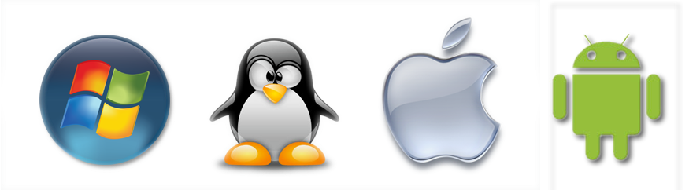

Para voltar à página inicial, clique aqui!
Sistemas Operacionais

Na disciplina de Sistemas Operacionais, administrada pelo professor Alan Santos, vamos discutir sobre os Sistemas Operacionais.
Na qual, é um software que serve como base para qualquer computador ou celular.
- Objetivo:
- Traduzir tudo em um formato amigável. É o que permite, por exemplo, que você leia este texto em uma interface gráfica,
com elementos visuais e destaques, em vez de um amontoado de números irreconhecíveis sobre um fundo preto.
- Exemplos de Sistemas Operacionais:
- Linux:
- iOS:
- macOS:
- ChromeOS
- FireOS:
- Entre outros.